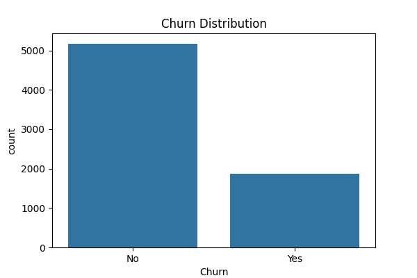
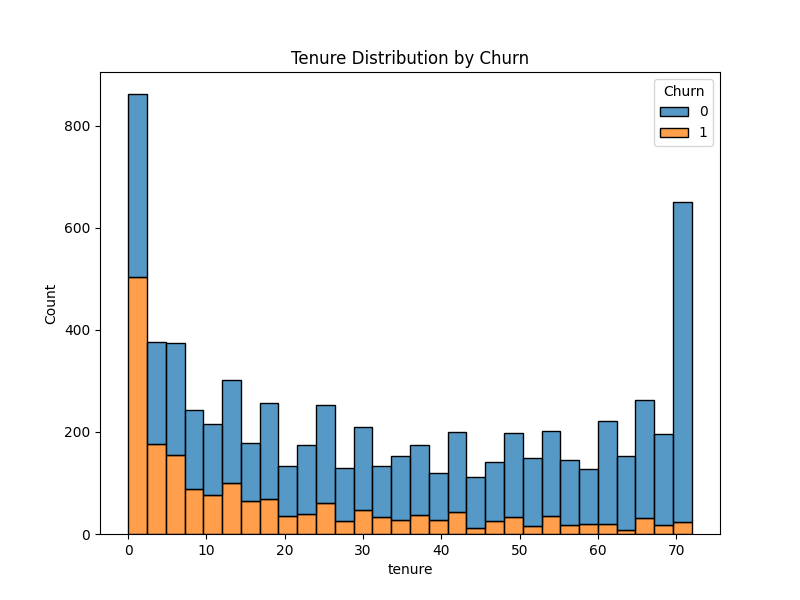
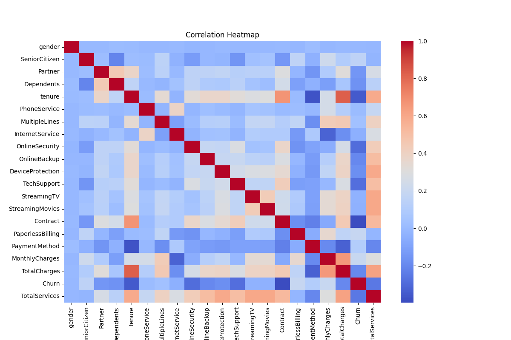

01At a Glance
Best Model AUC
0.862
Tuned Logistic Regression
Churn Rate
26.5%
1,869 of 7,043 customers
Top Predictive Feature
Contract
Highest importance, tuned Decision Tree
High-Risk Cohort
Top 10%
Flagged by churn probability
02Exploratory Analysis
Churn Distribution Yes / No

Tenure vs Churn stacked, 30 bins

Feature Correlation Heatmap 21 encoded features

03Model Performance
| Model | Accuracy | Precision | Recall | AUC |
|---|
| Logistic Regression |
0.8162 |
0.6781 |
0.5818 |
0.8615 |
| Tuned Logistic Regression |
0.8162 |
0.6781 |
0.5818 |
0.8615 |
| Decision Tree |
0.7296 |
0.4896 |
0.5040 |
0.6591 |
| Tuned Decision Tree |
0.7942 |
0.6056 |
0.6381 |
0.8414 |
04Findings & Response
Key Findings
- Tuned Logistic Regression performs best, reaching AUC 0.862
- Top factors driving churn: Contract, OnlineSecurity, tenure, InternetService, TotalCharges
- Customers with short tenure and high monthly charges are at higher risk
Retention Strategy
- Offer discounts or incentives for month-to-month customers to switch to longer contracts
- Provide stronger tech support and online security bundles for high-risk segments
- Prioritize retention outreach on customers ranked in the top decile of churn probability
05High-Risk Customers
Sample from top decile by predicted churn probability Tuned Logistic Regression
| Customer Index | Churn Probability |
|---|
| 185 | 65.9% |
| 6179 | 77.0% |
| 3328 | 67.1% |
| 3469 | 73.1% |
| 4343 | 71.5% |